Cleaning and Applying Grease to the Output Queue Injector
Purpose
This procedure contains instructions for cleaning and applying grease to the Output Injector and Injector Housing to reduce bleach and buffer crystal buildup.
Background
 Bleach and buffer overspray from the Output Queue Injector results in a dirty Output Queue; the crystals eventually build up enough to occlude the Output Queue MTU
Bleach and buffer overspray from the Output Queue Injector results in a dirty Output Queue; the crystals eventually build up enough to occlude the Output Queue MTU Multi-tube unit—Container used to process tests in the instrument. An MTU contains five separate reaction tubes. The MTU is moved through the instrument by the linear distributor and includes five tiplets for pipettiing to be used in the mag wash station. Presence Sensor.
Multi-tube unit—Container used to process tests in the instrument. An MTU contains five separate reaction tubes. The MTU is moved through the instrument by the linear distributor and includes five tiplets for pipettiing to be used in the mag wash station. Presence Sensor.
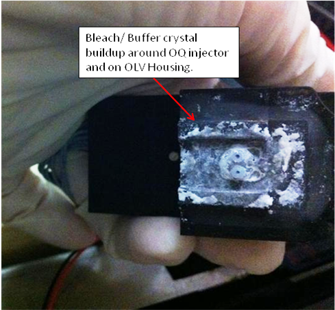
This occlusion leads to an MTU Detected After Load Movement System Message (081.000.00069). Furthermore, crystals on the plastic rails can cause MTUs to drift and jam against the metal stack rails at the handoff position.
Parts and Materials Required
- Dow Corning High Vacuum Grease
- Allen wrench set
- Absorbent pad
- 50% bleach solution
- DI water
- Ethanol
- Cotton swab
Time Required
- 10 minutes to perform the hardware modification
- 30 minutes to perform the verification
|
|
WARNING—The Output Queue is a Dirty area of the Panther System. Be very concientious of contamination risks. |
Cleaning Procedure
- Put on proper PPE.
- Power down the Panther System.
- Open the Right Side system panel.
 Unplug the Output Queue OLV Board.
Unplug the Output Queue OLV Board.
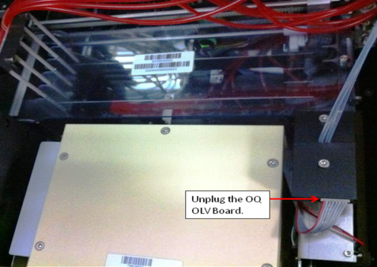
- Loosen the Output Queue OLV Housing thumbscrew.
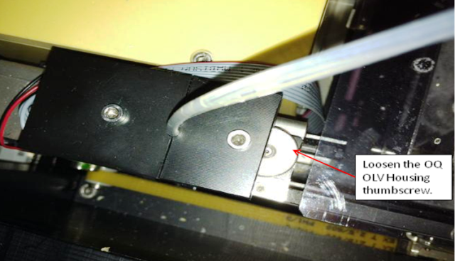
- Place an absorbent pad over the Output Queue for protection.
- Remove the Output Queue OLV Housing/Injector (the Output Queue will still be connected to the pump) and place on the absorbent pad.
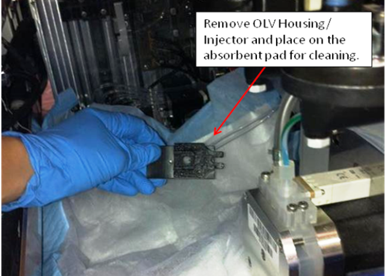
- Remove the injector and OLV board from the housing.

Note—If the injector is more than one year old, or if fluid is found in the housing or near the OLV board, the OQ Injector is faulty and needs to be replaced. - Clean the housing and injector with 50% bleach to prevent any contamination.
- Change gloves.
- Rinse with DI water and remove any bleach/buffer buildup.
- Dry the housing and injector.
- Install the injector and OLV board into the housing.
- Replace the absorbent pad.
- Clean any debris from the Output Queue OLV mount location with bleach and DI water.
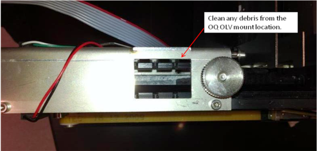
- Using a cotton swab and ethanol, wipe clean the Output Queue MTU presence sensor.
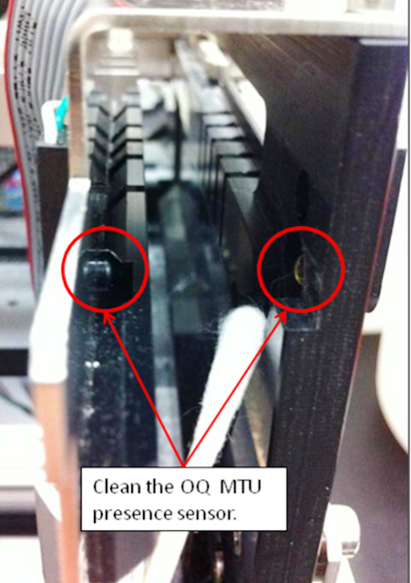
- Clean the black plastic Output Queue entrance rail.
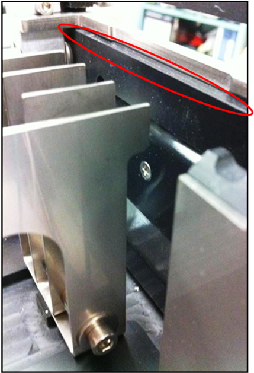
Adding Grease Procedure
- Liberally spread Dow Corning High Vacuum grease over the injector and housing. Fully cover the entire area. Any grease that goes in the injector will be cleared by the bleach/buffer fluid pump.
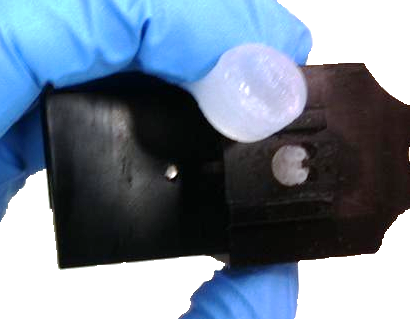
- Change gloves.
- Replace the Buffer bottle B with a service bottle in order to keep the Panther System inventory current. Top off the bleach bottle. (Or, be prepared to replace Universal Fluid Kit B following service.)
Verification
- Power on the Panther System.
- Using Service Software, initialize only the Output Queue Peri Pump (Peri Pump).
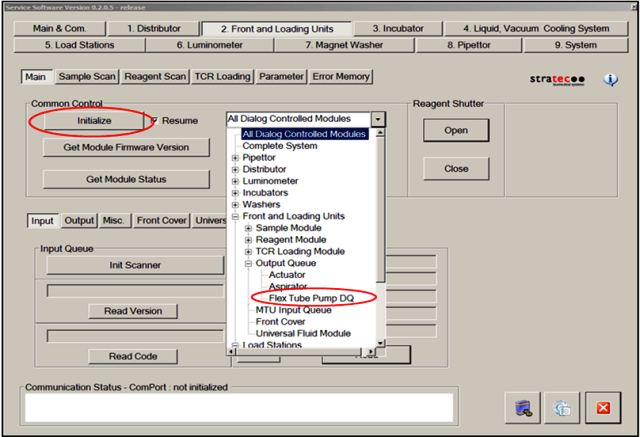
- Place the injector over an empty receptacle.
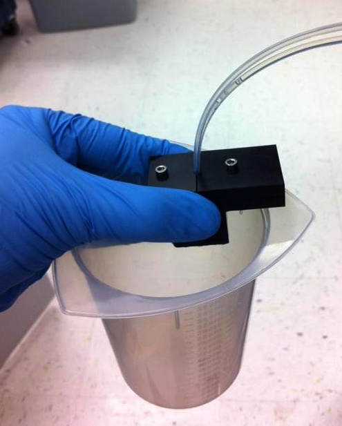
- Run the Peri Pump to clear any grease from the injector tips by selecting Start in the Deactivation/Peri Pump section of the Output Queue tab in Service Software.
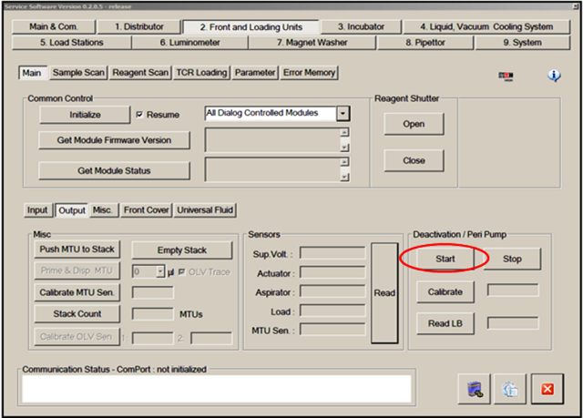
The pump will continue to run until Stop is selected.
- Once both streams are confirmed to be dispensing, select Stop.
- If either stream does not dispense, check all connections and check to see if the Peri Pump tubing needs to be replaced.
- Re-install the OLV Housing/Injector.
- Wipe away any excess grease.
- Tighten the Output Queue OLV Housing thumbscrew.
- Plug in the Output Queue OLV PCB.
- Replace the original Buffer bottle B or replace the Universal Fluids Kit B. Top off the bleach bottle as needed.
- Close the Right Side system panel.
- Start the Panther System GUI and perform a full Prime Operation of pumping fluid through tubing to ensure proper and consistent fluid delivery (remove air from the tubing, etc.). for verification.
- Confirm there are no Output Queue dispense errors during the Prime.
 button at the top of the page to send feedback, comments, or change requests.
button at the top of the page to send feedback, comments, or change requests.